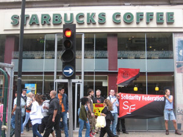
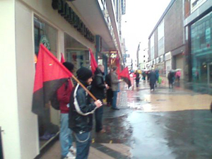

Submitted on Fri, 07/11/2008 - 1:59am
Originally published at indymedia.org.uk.
On Thursday 24th April, Monica, a barista in the central Seville branch
of Starbucks, was fired without notice for creating problems with her
workmates. She had worked there for a year and a half. She had been
active in organising with the CNT and defending her rights. The store
manager told her on several occasions that she must have nothing to do
with unions. She is a member of the Commerce Union of the CNT, in
Spain. The CNT is demanding her reinstatement.
Barely
a month later, in Grand Rapids, Michigan, USA, Starbucks fired barista
Cole Dorsey on June 6th. Cole had over 2 years of service and was
active in the IWW Starbucks Workers Union. The National Labor Relations
Board in the US has already made the firm rehire two sacked workers in
2006, and are looking at Starbucks latest violation.
Submitted on Sat, 07/05/2008 - 2:04pm
As part of the Global Day of Action against Starbucks called by the
AIT/IWA and IWW Organise! and the WSM picketed Starbucks in Belfast
today (5th July) to demand the reinstatement of Monica, a member of the
anarcho-syndicalist member working in their central Seville outlet, and
Cole Dorsey, an IWW member who was fired by Starbucks for organising in
their Grand Rapids, Michican, shop.
Organise! and the WSM picketed Starbucks in Belfast city centre today
from 12 to 1 pm. Despite the miserable weather around 12 people joined
the picket and leafleted passers by and potential customers outside the
coffee shop. At the start of the picket 3 people had gone inside to
leaflet customers and staff. There was a very positive response to the
picket however one person was falsely accused of assaulting a
Starbuck's member of staff after leafleting staff and customers inside.
While Starbucks present themselves as a trendy, ethical corporation
when it comes to their own workers they are ruthless union-busters
determined to stop their employees organising. Monica was fired on the
24th of April without notice. She had worked in the central Seville
branch of Starbucks for a year and a half when her manager suddenly
claimed she "created problems with her workmates". She had resistged
management when they made people work public holidays without extra
pay. She refused to attend work meetings outside working hours where no
pay or time in lieu was offered. Her sacking came after she asked about
another worker who had ben fired. The store manager had told her on
several occasions that she must have nothing to do with unions.
Barely a month later, in Grand Rapids, Michican, USA, Starbucks fired
Cole Dorsey on June 6th. Cole had over two years of service and was
active in the IWW Starbucks Workers Union.
Originally posted here
Submitted on Sat, 07/05/2008 - 1:51pm
IWW Starbucks Workers Union, StarbucksUnion.org
 July 1, 2008
July 1, 2008
Statement of the IWW Starbucks Workers Union on the Announcement of 600 Starbucks Store Closures
"The IWW Starbucks Workers Union is deeply troubled that
management's numerous missteps are resulting in more serious hardships
for baristas, bussers, and shift supervisors.
To ensure transparency, Starbucks should immediately disclose the
locations it intends to close and outline its severance plan. Starbucks
and its CEO Howard Schultz must minimize the number of layoffs, assure
adequate notice to affected families, and offer severance pay which is
fair. Employees and their families deserve to be able to safeguard
their futures.
If Starbucks is serious about distinguishing itself from competitors
like McDonald's and Dunkin' Donuts, Schultz should stop prohibiting
full-time status for retail hourly employees and improve a health care
plan which insures a lower percentage of workers than Wal-Mart's. And
the company should stop wasting millions of dollars on its
union-busting lawyers and PR professionals at Akin Gump and Edelman."
Related Stories:
Submitted on Thu, 06/12/2008 - 2:55pm
On June 7, Wobblies and supporters held loud and visible protest rallies at
the stores of the art supplies chain Boesner in Colone, Frankfurt, Berlin,
Vienna and Graz. With these actions, they protested against the management of
the Boesner shop in Colone, who prevented an organizing drive of the Colone IWW
by harassing workers who had tried to form a works council (Betriebsrat)
there.
The german labour law guarantees the formation of works councils elected by
the workers in shops with 5 workers or more and prohibits management action
against the election process of these institutional bodies. When members and
supporters of the IWW at the Boesner shop announced the elections for a works
council the management began to panik. Workers were questioned and taken under
pressure in interviews at the managers office. One day before the election
should take place, the management held a meeting with all workers, where they
threatened to cut wages and extend working hours if a works councils would be
formed. The forced the workers to vote publically in front of the managers
against a works council. Rustrated by the divisions succesfully made by these
illegal employers actions, the IWWs withdraw their election
announcement.
A few months later the management of Boesner Colone began to implement the
first measures they had threatened the workers with: the extension of working
hours by opening of the stores on saturdays (which hadn?t been the case before
and obviously had been intended by them anyway. But neither did they employ more
workers to staff the extra shifts, nor did they pay a weekend bonus, which is
not uncommon for weekend work in Germany. The shifts should have to cope the
extra-load of work with more intensified stress at work.
Submitted on Thu, 06/12/2008 - 2:38pm
 The Union of Comerical and Hotel workers CNT-AIT
in Sevilla, Spain along with the Grand Rapids Starbucks Workers Union
(IWW) have announced a Global Day of Action scheduled for July 5th. The
two groups are asking social organizations, unions, and individuals
from around the world to promote and participate in this day of action.
The Union of Comerical and Hotel workers CNT-AIT
in Sevilla, Spain along with the Grand Rapids Starbucks Workers Union
(IWW) have announced a Global Day of Action scheduled for July 5th. The
two groups are asking social organizations, unions, and individuals
from around the world to promote and participate in this day of action.
On April 24th, 2008 a barista named Monica was fired for her
union activity from a Starbucks in Sevilla, Spain. She was a member of
the Union of Commercial and Hotel Workers of the Confederacion Nacional
de Trabajadores (CNT). Now with the support of all CNT affiliates, the
International Workers Association, and the Starbucks Workers Union
(IWW) they are demanding justice for Monica.